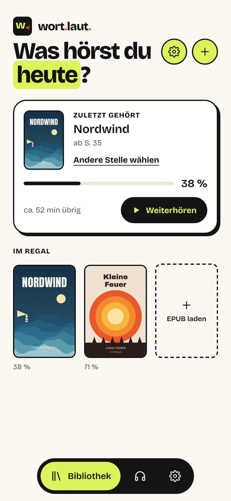

Vier Apps für den eigenen Alltag. Gebaut in Stuttgart, offen für Familie und Freunde.
Training, das dir zeigt, wie’s geht.
Jeden Tag ein neues Workout, passend zu deinem Equipment. Animierte Figuren machen jede Übung vor, der Timer zählt mit. Oder du schreibst einfach rein, worauf du heute Lust hast.
- Kostenlos
- Ohne Anmeldung
- Über 250 Übungen

Dein Lauf-Coach, der mitdenkt.
Trainingsplan, Tagesform und Anpassungen in einer App. Einheiten lassen sich verschieben und tauschen, verpasste Läufe plant die App selbst um. Alles läuft synchron mit Intervals.icu und landet direkt auf der Garmin-Uhr.
- Tagesform auf einen Blick
- Workouts auf der Uhr
- KI-Coach

Hör weiter. Lies weiter. Ganz egal wo.
Wort. Laut. liest deine eigenen E-Books mit natürlicher Stimme vor und sagt dir immer, auf welcher Seite du bist. So wechselst du zwischen Kopfhörer, E-Reader und Hardcover, ohne die Stelle zu verlieren.
- Natürliche Stimmen
- Sleep-Timer
- Zugang per Einladung

Alle Kalender. Ein Buchungslink.
Gäste sehen nur Zeiten, in denen du wirklich kannst, über Job, Business und Privatleben hinweg. Sie fragen einen Termin an, du bestätigst, und alles landet im Kalender.
- Eigene Regeln pro Link
- Mails zur Bestätigung
- In der Testphase